SLY
Grande Sábio do Ferrão
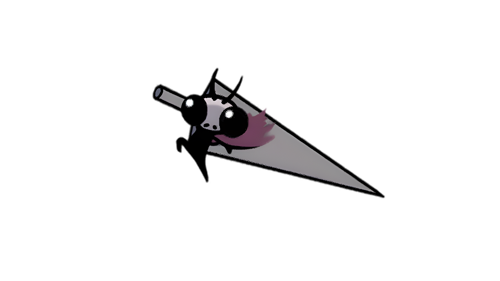
"Vale tudo em um mundo feito de Geo."

História

Sly costumava a ser o Grande Sábio do Ferrão. Durante sua ocupação passada, ele treinou alguns discípulos nas Artes do Ferrão: Oro, Mato e Sheo. Eventualmente, Sly abandonou sua ocupação como o Grande Sábio do Ferrão. Ele se convenceu que a força de acumular Geo é mais forte do que a do ferrão. Ele por isso se tornou a uma vida simples como um comerciante, encontrando e vendendo produtos em sua loja em Dirtmouth. Ele não, no entanto, esqueceu sua o domínio e o respeito do ferrão e esses que praticam suas artes. Ele mantem seu grande ferrão no porão de sua loja e ainda se lembra de seus pupilos. Em certo ponto, um sonho levou-o a caminhar as cavernas abaixo de Dirtmouth. Ele também perdeu sua Chave do Comerciante que acabou a ficar em uma sala no Pico de Cristal.
Eventos
Sly pode ser encontrado em um casebre em um vilarejo abandonado nas profundezas da Encruzilhada Esquecida, após a Mãe Mosca. O lojista esteve lentamente sucumbindo a Infecção, mais aos se aproximar dele tira-o de seus sonhos, salvando-o. Após isso, Sly retorna a Dirtmouth e abre sua loja, sem qualquer memória de como ele caiu naquela situação. Em Dirtmouth, Sly vende diversos produtos: de Amuletos a ferramentas para se aventurar, até mesmo Fragmentos de Máscara e Fragmentos de Receptáculo. Seu estoque no porão, no entanto, se mantem trancado até que seja retornado a ele a Chave do Comerciante, perdida no Pico de Cristal. Sly nota quando o Cavaleiro tenha afiado seu Ferrão, e também quando o Cavaleiro começa a aprender as Artes do Ferrão. Após que o Cavaleiro ter aprendido todas as três Artes do Ferrão dos Mestres do Ferrão, Sly pode ser encontrado em seu porão, onde ele se revela o legendário Grande Sábio do Ferrão. Para honrar os ritos da passagem de Mestres do Ferrão, ele presenteia o Cavaleiro com o Amuleto da Glória do Mestre do Ferrão. Ele se dirige ao Cavaleiro como Mestre do Ferrão após esse ponto.
Mercadorias
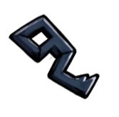
Chave Simples
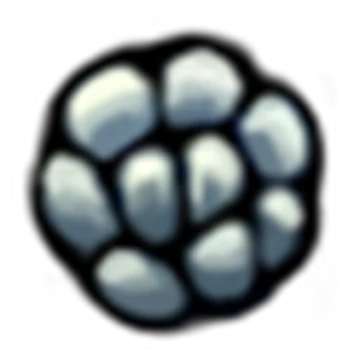
950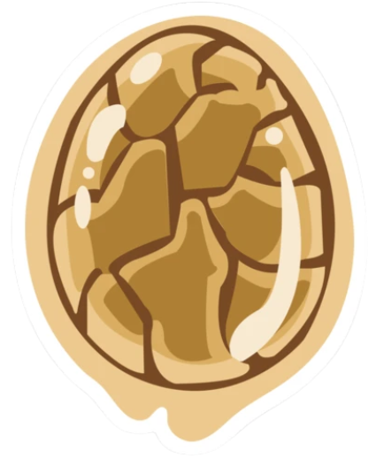
Ovo Rançoso
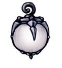
Lanterna de Lumélula

Enxame de Colecionadores

Carapaça Robusta
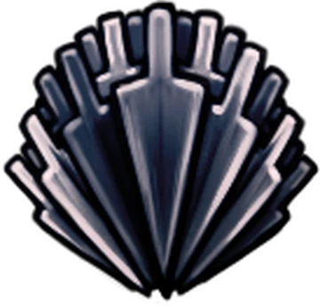
Golpe Pesado
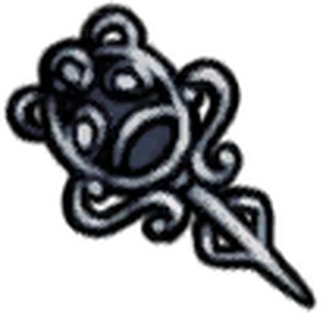
Chave Elegante
Fragmento de Máscara
Fragmento de Máscara
Fragmento de Máscara
Fragmento de Máscara
Fragmento de Receptáculo
Fragmento de Receptáculo
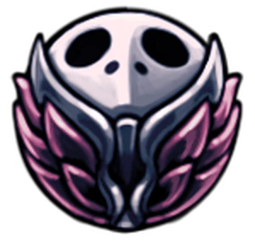
Mestre da Corrida
Localização
Sly aparece pela primeira vez em um casebre abandonado na região sudeste da Encruzilhada Esquecida. Depois de o escutar, ele poderá ser encontrado em Dirtmouth.
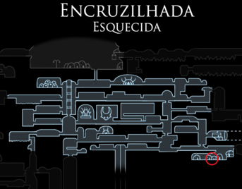
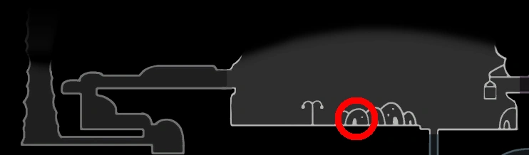
Localização na Encruzilhada Esquecida
Localização em Dirtmouth